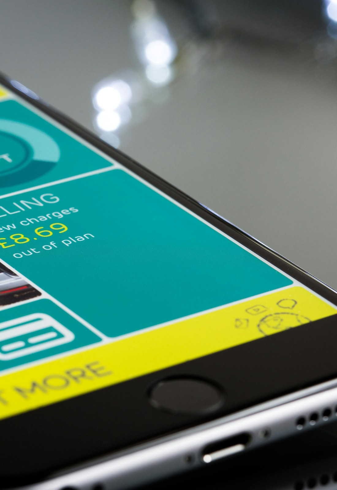
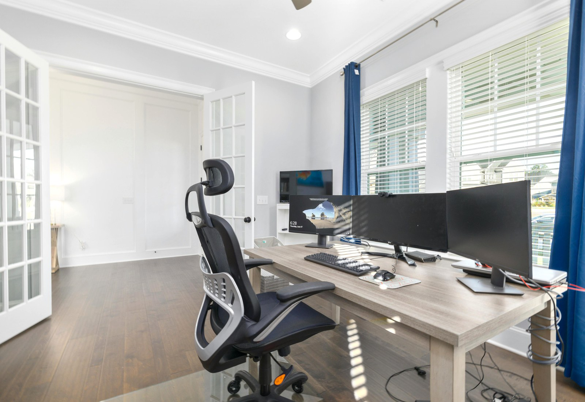
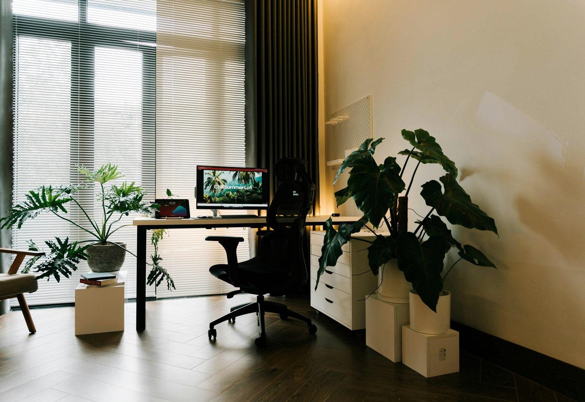

One team

WordPress workflow
內容管理與頁面更新可以跟建置流程一起整理。
官網上線後的文章、案例與服務內容，不用再另外找人拆開處理。
App extension
需要延伸功能時，可以直接接到行動體驗。
會員、預約、流程展示或服務延伸，都能在原本網站基礎上往外接。
SEO growth
建站、內容與搜尋曝光可以同步往前推進。
頁面架構、關鍵字與內容策略一起整理，交付後更容易持續成長。
Cloud operations
上線、備份、監控與維運也留在同一個窗口。
從部署到後續維護都接得住，交付節奏更穩，後續修改也比較快。Three visible strengths
選擇整合型服務，優勢不只在畫面好看。

What clients actually feel
建置、曝光、維運一起看，後續更省時間。
這也是整合型數位服務最直接的價值：少來回、少斷點、少重工。

Deliverables